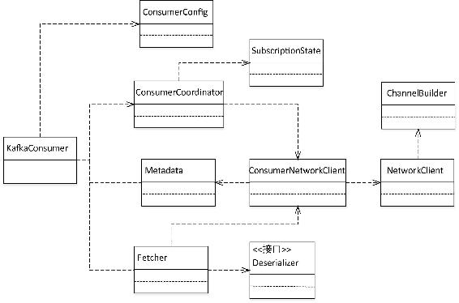
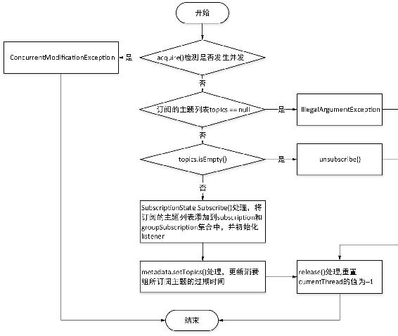
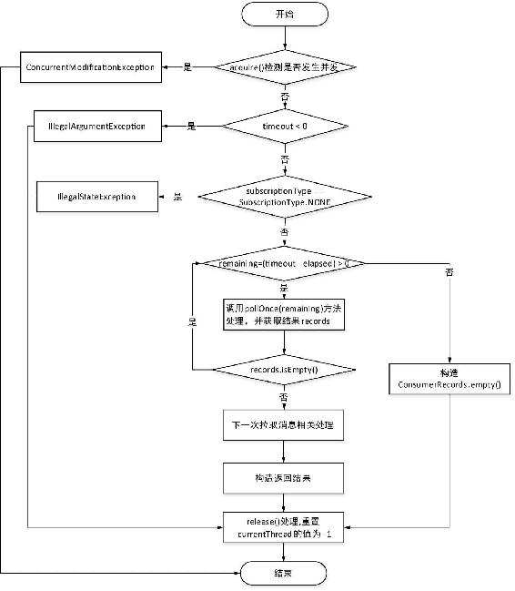
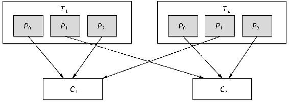
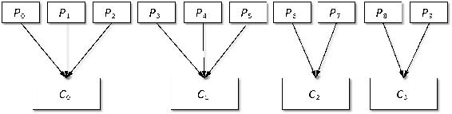
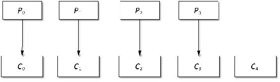
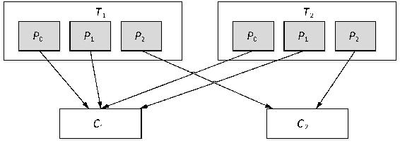

当前版本的Kafka还保留Scala版本的两套消费者，本书统称为旧版消费者。旧版消费者属于Kafka核心模块的一部分，分别为SimpleConsumer和ZooKeeperConsumerConnector，我们习惯称SimpleConsumer为低级消费者，称ZooKeeperConsumerConnector为高级消费者。通过Java语言重新实现的消费者KafkaConsumer我们称为新版消费者。
对于旧版消费者的实现原理并不打算进行过多的讲解，低级消费者直接通过BlockingChannel与相应的代理创建连接，BlockingChannel是Kafka实现的对Java NIO相关通道的封装。而旧版的高级消息者已被废弃，未来的版本将会将其移除，因为高级消费者是基于ZooKeeper管理，存在羊群效应及脑裂问题，已通过Java语言重新设计与实现。在后续章节对消费者API应用也不会涉及高级消费者相关API的介绍。
Scala版本所提供的两个级别的消费者主要有以下两点不同。
低级消费者提供了一种灵活控制数据消费的操作，虽然对调用者来说实现起来较复杂，但在某些场景下通过低级消费者反而更加方便。例如，同一条消息多次消费、只读取某个分区信息、消费指定位置的消息等场景。旧版高级消费者由于在设计上存在缺陷因此被重新实现，如果大家应用当前版本的Kafka，强烈推荐使用新版的消费者。关于旧版消费者就简单介绍至此。
KafkaProducer是线程安全的，然而KafkaConsumer是非线程安全的。KafkaConsumer定义了一个acquire()方法用来检测每个方法的调用是否只有一个线程在操作，在KafkaConsumer底层实现时我们可以看到每个方法的第一步就是检测当前方法是否有其他线程正在执行，若有其他线程正在操作即发生并发操作，则抛出ConcurrentModificationException异常。需要注意的是，KafkaConsumer只是通过acquire()方法来检测是否有多线程并发操作，一经发现多线程并发操作就抛出异常，这显然与我们说的同步方法或者锁不同，它并不会因此而阻塞等待，我们可以理解成KafkaConsumer相关的操作是在“轻量级锁”的控制下完成。之所以称为轻量级锁，是因为KafkaConsumer实现了一套思想与锁类似但不等同锁的实现方式，仅通过线程操作记数标记的方式来检测线程是否发生并发操作，以此保证只有一个线程操作。另外，acqurie()方法和release()成对出现与锁的lock和unlock用法类似。
KafkaConsumer实现了Consumer接口，Consumer定义了对外提供的API，主要包括订阅消息的subscribe()方法和assign()方法，分别用来指定订阅主题和订阅主题的某些分区；poll()方法，用于拉取消息；seek()方法、seekToBeginning()方法和seekToEnd()方法，用来指定消费起始位置；commitSync()方法和commitAsync()方法，分别用来以同步和异步方式提交消费偏移量；获取消费信息的方法，如获取分区分配关系的assignment()方法、获取下一次消费消息位置的position()方法以及对分区消费控制的pause()方法和resume()方法等。
现在，我们简要分析KafkaConsumer初始化的过程。由于KafkaConsumer的实例化过程与KafkaProducer实例化过程比较类似，只不过实例化的组件不同，因此对KafkaConsumer初始化过程不进行详细介绍。我们只简要分析KafkaConsumer初始化过程所定义的变量及其所依赖的组件。
KafkaConsumer定义了以下3个Atomic类型的变量用来管理对KafkaConsumer的操作。
KafkaConsumer实例化就是从ConsumerConfig中提取相应的消费者级别的配置实例化相应的组件。KafkaConsumer较重要的配置如表4-8所示。
表4-8 KafkaConsumer重要配置说明
|
属性名 |
默认值 |
描述 |
|---|---|---|
|
group.id |
/ |
消费组id，新版本消费者必须由客户端指定 |
|
client.id |
/ |
KafkaConsumer对应的客户端id，客户端可以不指定，Kafka会自动生成一个clientId字符串 |
|
key.deserializer |
/ |
消息的Key反序列化类，需要实现org.apache.ka fka.common.seria lization.Deserializer接口 |
|
value.deserializer |
/ |
消息的Value反序列化类，需要实现org.apache.ka f ka.common. serialization.Deserializer接口 |
|
enable.auto.commit |
true |
是否开启自动提交消费偏移量 |
|
max.poll.records |
500 |
一次拉取消息的最大数量 |
|
max.poll.interval.ms |
300000 ms |
当通过消费组管理消费者时，该配置指定拉取消息线程最长空闲时间，若超过这个时间间隔还没有发起poll操作，则消费组认为该消费者已离开了消费组，将进行平衡操作 |
|
send.buffer.bytes |
128 KB |
Socket发送消息缓冲区大小 |
|
receive.buffer.bytes |
64 KB |
Socket接收消息缓冲区大小 |
|
fetch.min.bytes |
1 |
一次拉取操作等待消息的最小字节数 |
|
fetch.max.bytes |
50 MB |
一次拉取操作获取消息的最大字节数 |
|
session.timeout.ms |
10000 ms |
与ZooKeeper会话超时时间，当通过消费组管理消费者时，如果在该配置的时间内组协调器没有收到消费者发来的心跳请求，则协调器会将该消费者从消费组中移除 |
|
request.timeout.ms |
305000 ms |
客户端发送请求后等待回应的超时时间 |
|
heartbeat.interval.ms |
3000 ms |
发送心跳请求的时间间隔 |
|
auto.commit.interval.ms |
5000 ms |
自动提交消费偏移量的时间间隔 |
|
fetch.max.wait.ms |
500 ms |
若是不满足fetch.min.bytes时，客户端等待请求的最长等待时间 |
KafkaConsumer实例化的主要组件如图4-18所示，各组件作用说明如下。

图4-18 KafkaConsumer依赖的主要组件的类图
KafkaConsumer提供了两种订阅消息的方法，一种是通过KafkaConsumer.subscribe()方法指定消息对应的主题，支持以正则表达式方式指定主题，另一种是通过KafkaConsumer.assign()方法指定需要消费的分区。第一种订阅方式由同一个消费组的Leader消费者根据各消费者都支持的分区分配策略为消费者分配分区。同时在订阅主题时可以指定一个ConsumerRebalanc Listener，在消费者发生平衡操作时回调处理。第二种订阅方式客户端直接指定了消费者与分区的对应关系。下面对两种订阅方式分别进行讲解。
按主题订阅有3个重载的subscribe()方法，我们首先分析非正则表达式订阅主题的subscri be()方法。不带Consumer RebalanceListener参数的subscribe()方法在底层实现时调用的是带Consumer RebalanceListener参数的subscribe()方法，只不过实例化了一个NoOp Consumer RebalanceListener。
subscribe()方法首先通过acquire()方法检测是否有并发操作，若无并发操作，则验证订阅的主题列表topics是否为null，若topics为null则抛出IllegalArgumentException，调用Kafka Consumer.release()方法重置current Thread的值为−1，执行结束；若topics是一个空集合，即集合中无任何元素，则表示客户端取消订阅，因此调用KafkaConsumer.unsu bscribe()执行取消订阅主题操作；否则调用SubscriptionState.subscribe()方法，将订阅的主题列表信息保存到Subscription State.subscription集合和SubscriptionState.groupSubscription集合中，同时将实例化的ConsumerRebalanceListener赋值给SubscriptionState.listener。然后调用Metadata.setTopics()方法更新Metadata维护的该消费组所订阅主题的过期时间。虽然消费者并没有启用主题的过期时间，但仍然需要更新Metadata中主题的过期时间，因为只有这些通过显示设置过期时间的主题才会在Metadata中保留。最后调用KafkaConsumer.release()方法重置currentThread的值为−1，执行结束。该方法执行逻辑如图4-19所示。
以正则即模式匹配订阅主题的subscribe()方法提供了一种动态订阅主题的方法，这种方式会定期检查既有主题，当主题或主题的分区发生变化时，自动进行分区重分配。例如，当创建的主题名称符合订阅主题所指定的正则表达式时，该主题就会在定期检查时被加入到该消费组所订阅的主题列表中，删除主题时就会将该主题从消费组订阅主题列表中剔除，主题和分区的变化都会触发该消费组进行重新平衡操作，重新分配各消费者所消费的分区。
模式匹配订阅主题方式与直接指定主题列表方式实现逻辑类似，也是首先调用Subscription State.subscribe()方法将订阅关系保存到SubscriptionState维护的用来保存订阅关系的数据结构中，即将订阅主题的模式（Pattern）赋值给subscribedPattern。由于是通过模式匹配来查找订阅的主题，所以接下来需要先设置Metadata.needMetadataForAllTopics标志位为true，然后请求更新Metadata。最后交由消费者协调器ConsumerCoordinator从集群Cluster的当前所有主题中查找满足模式匹配的主题，将主题添加至SubscriptionState的subscription和groupSubscription集合中，并更新这些主题在Metadata中记录的过期时间。

图4-19 KafkaConsumer非模式匹配订阅主题的基本流程
客户端指定分区的订阅方式assign()方法实现逻辑与subscribe()类似，也是首先检测是否有并发操作，然后判断请求参数是否合法，即分区是否为null以及是否是空集合，分别进行与subscribe()方法相同处理。然后遍历订阅的分区，构造一个与所订阅分区相对应的主题的topics集合。在将用户指定的消费者分区分配关系保存到SubscriptionState.assignment之前，先调用Consumer.maybeAuto CommitOffsetsNow()方法进行一次消费偏移量提交，以保证同一个消费组下的消费者对分区的消费偏移量已提交，防止重复消费。最后更新所订阅的分区对应的主题过期时间。
KafkaConsumer两类订阅方式是互斥的，客户端只能选择其中一种订阅方式，subscribe()方法由Kafka自动进行分区分配，分区自动分配逻辑在3.3节有相应介绍，这里不再赘述。
KafkaConsumer提供了一个poll()方法用于从服务端拉取消息，该方法通过Fetcher类来完成消息的拉取及更新消费偏移量，因此对KafkaConsumer消费消息的讲解，首先必须讲解Fetcher拉取消息的过程。
Fetcher主要功能是负责构造拉取消息的FetchRequest请求，然后通过ConsumerNetwork Client发送FetchRequest请求，最后对返回的结果进行处理并更新缓存中记录的消费位置。在对Fetcher主要功能实现细节进行分析之前，先对Fetcher类定义的主要字段进行介绍。
在对Fetcher类的主要字段进行介绍之后，首先分析用于构造FetchRequest的Fetcher.create FetchRequests()方法的实现逻辑，该方法执行逻辑如下。
首先通过medata.fetch()方法获取集群信息Cluster，然后从该消费者所分配的分区subscriptions中查找该消费者 “可拉取消息”（fetchable）的分区集合，一个分区是否为“可拉取消息”，需要满足以下条件。
（1）该分区对应的TopicPartitionState中暂停消费标志位pause为false，position不为空。
（2）nextInLineRecords中没有来自该分区的消息。
（3）completedFetches链表队列中的CompletedFetch不是来自该分区。
在查找到所有“可拉取消息”的分区集合之后，迭代集合中的每个分区，查找该分区的Leader副本所在的节点，之所以要查找Leader副本对应的节点，是因为Leader节点负责处理消息的读写请求。如果Leader节点不存在，则设置metadata更新标识为true，触发Kafka元数据信息的更新操作，由于分区Leader副本对应的节点不存在，因此本次拉取消息将忽略该分区。若Leader副本对应的节点存在，同时unsent队列中不包括将要发往该Leader节点的请求，并且inFlightRequests也不包括发往该节点的请求，则构造与该分区对应的FetchRequest.Partition Data对象，并将该对象保存到fetchable集合中，fetchable是一个Map<Node, LinkedHashMap <TopicPartition, FetchRequest.PartitionData>>类型的集合，这样就按分区Leader节点进行了分组，最后再遍历fetchable中的每个元素，根据每个元素的值构造FetchRequest，最终将fetchable转换为Map<Node, FetchRequest>类型的requests集合。
通过createFetchRequests()方法处理之后，将对分区的请求按分区Leader副本所在的节点进行了分组，这样就将消费者发往同一个Leader副本节点的所有分区请求封装为一个FetchRequest对象。在完成FetchRequest的构造之后，就可以执行FetchRequest请求的发送了。
Fetcher.sendFetches()方法就是负责将createFetchRequest()方法构造的requests集合中的每个FetchRequest发送给相应的节点。该方法会遍历requests集合中的每个元素，调用client.send()方法将FetchRequest构造一个ClientRequest对象，并将其保存到client.unsent缓冲队列中等待发送。同时绑定一个RequestFutureListener，用于对FetchResponse进行处理，RequestFutureListener提供了一个onSuccess()方法和一个onFailure()方法，分别用来在FetchRequest请求处理成功和发生异常时进行相应处理，在onSuccess()方法中主要是对FetchReponse进行处理，用每个分区返回的数据实例化一个CompletedFetch对象，并添加到completedFetches队列中。
completedFetches队列中的数据并不是最终返回给客户端的ConsumerRecord类型数据，Fetcher定义了一个fetchedRecords()方法用于将completedFetches队列中保存的消息转为ConsumerRecord类型的消息，同时会更新每个分区对应用的TopicPartitionState的position值，position值是下一次拉取消息的起始位置。
至此，Fetcher拉取消息的基本过程分析完毕。现在我们再回到KafkaConsumer.poll()方法处理逻辑的讲解。
KafkaConsumer.poll()方法只有一个用于指定在拉取消息时等待时长的参数timeout。timeout字段必须是非负整数，否则抛出IllegalArgumentException异常，若timeout为0，则表示在没有拉取到消息时也无需等待重试再次拉取，而是立即返回给客户端，否则在没有拉取到消息时会在timeout时间内进行重试从服务端拉取消息，直至拉取到消息或者等待时间超过timeout后分别构造响应结果返回给客户端。该方法的核心逻辑是当没有拉取到消息时在timeout时间内循环调用pollOnce(long remaining)方法向服务端发送FetchRequest请求并进行相应处理，若pollOnce()方法拉取到消息，则poll()方法会在将消息返回给客户端之前调用Fetcher.sendFetches()方法发送下一次拉取消息的请求，若没有拉取到消息同时等待时间没有超过timeout设置，则循环调用pollOnce()方法处理，若超时则构造一个空消息集合返回给客户端。
pollOnce()方法的主要逻辑是：确保消费组在服务端对应的组协调器已完成分配并正常连接，消费者已加入到该组协调器的管理之中，同时以同步方式调用doAutoCommitOffsetsAsync()方法获取消费初始位置。然后首先调用Fetcher.fetchedRecords()方法，检测是否已获取消息，之所以首先调用Fetcher.fetchedRecords()方法进行处理，是因为KafkaConsumer.poll()方法每次调用pollOnce()方法获取消息之后，紧接着就会发送一次FetchRequest请求以避免阻塞等待。若获取到消息则立即返回到poll()方法执行体，poll()方法会发送下一次拉取消息的FetchRequest请求，然后构造响应结果返回给客户端；否则调用fetcher.sendFetches()方法发送FetchRequest请求，并调用ConsumerNetworkClient.poll()方法执行网络层I/O请求处理，阻塞等待服务端响应之后构造返回结果，在构造返回结果之前，需要检测在长时间的poll()处理之后，消费者是否需要重新加入消费组进行平衡操作，若需要重新加入消费组则返回一个空消息集合，否则调用Fetcher.fetchedRecords()方法获取消息，最后返回poll()方法执行体。
KafkaConsumer.poll()方法的执行逻辑流程如图4-20所示。

图4-20 KafkaConsumer.poll()方法的执行逻辑流程
这里再着重介绍一下在拉取消息之前如何确定消费起始位置。Kafka提供了由KafkaConsumer自动设置消费起始位置和客户端调用KafkaConsumer相应API两种方式来确定消费起始位置。客户端可以通过KafkaConsumer的seek()方法、seekToBeginning()方法和seekToEnd()方法在消费poll之前指定消费起始位置。其中seek()方法用于指定消费起始位置到一个特定位置；seekTo Beginning()方法指定OffsetResetStrategy为“EARLIEST”，相当于通过配置项auto.offset.reset设置消费偏移量重置策略为earliest的方式；seekToEnd()方法设置OffsetResetStrategy为“LATEST”，相当于通过配置项auto.offset.reset设置消费偏移量重置策略为latest的方式。另一种方式是通过auto.offset.reset配置项设置消费起始位置，默认是采用“LATEST”策略的自动重置消费起始位置，在KafkaConsumer初始化时会读取配置项auto.offset.reset配置的消费位置重置策略初始化SubscriptionState。在pollOnce()方法在执行时会检测是否订阅的主题和分区都已设置了消费起始位置，即订阅列表对应的Topic PartitionState.position不为空，若订阅列表中存在TopicPartitonState.position为空，则先通过Fetcher根据自动重置策略获取消费起始位置，若仍有部分订阅分区没有获取到消费起始位置，则通过Fetcher向Kafka集群发送OffsetFetch Request请求，请求获取消费起始位置。
旧版消费者将消费偏移量提交到ZooKeeper的/consumers/${group.id}/o f fsets/${topic Name}/${partitionId}节点中，然而ZooKeeper并不适合频繁进行读写操作，因此新版消费者进行了改进，将消费偏移量保存到Kafka一个内部主题“__consumer_offsets”中，消费偏移量如同普通消息一样追加到该主题相应的分区当中。Kafka内部主题配置了“compact”策略，这样不仅保证了该主题总保留各分区被消费的最新偏移量，而且控制了该主题的日志容量。通过该消费者对应的消费组（${group.id}）与该主题分区总数取模的方式来确定消费偏移量提交的分区，算法如下：
(Math.abs(${group.id}.hashCode() %${offsets.topic.num.partitions}Kafka提供了两种提交消费偏移量的方式：KafkaConsumer自动提交和客户端调用KafkaConsumer相应API提交，后者提交偏移量的方式通常也称为手动提交。
由客户端调用API提交消费偏移量需要在实例化KafkaConsumer时设置enable.auto.commit配置项为false。Kafka提供了同步提交commitSync()方法和异步提交commitAsync()方法供客户端提交消费偏移量，这两种方法分别调用的是ConsumerCoordinator的commitOffsetsSync()方法和commitOffsetsAsync()方法。底层实现是通过客户端消费者协调器ConsumerCoordinator发送OffsetCommitRequest请求，服务端组协调器GroupCoordinator进行处理，最终将消费偏移量追加到Kafka内部主题当中。这两种提交消费偏移量方法的区别在于：使用同步提交时，KafkaConsumer在提交请求响应结果返回前会一直被阻塞，在成功提交后才会进行下一次拉取消息操作；异步提交时KafkaConsumer不会被阻塞，这样当提交发生异常时就有可能发生重复消费的问题，但异步方式会提高消费吞吐量。
KafkaConsumer自动提交消费偏移量时，在KafkaConsumer实例化时需设置enable.auto.commit为true，同时可以通过配置项auto.commit.interval.ms来设置提交操作的时间间隔。当前版本的KafkaConsumer自动提交消费偏移量并不是通过定时任务周期性地提交，而是在一些特定事件发生时才检测与上一次提交的时间间隔是否超过了${auto.commit.interval.ms}计算出的下一次提交的截止时间nextAutoCommitDeadline，若时间间隔超过了nextAutoCommitDeadline则请求提交偏移量，同时更新下一次提交消费偏移量的nextAuto CommitDeadline。之所以不用定时任务，我认为首先定时任务在后台一直运行是比较耗费资源的，其次这也是没有必要的，因为当消费者启动后并不总能够拉取到消息，这在一定程度上取决于生产者生产消息的速率。需要检测是否提交消费偏移量的事件如下。
自动提交消费偏移量底层实现也是调用ConsumerCoordinator的commitOffsetsSync()方法或commitOffsetsAsync()方法进行处理。
KafkaConsumer启动后会定期向服务端组协调器GroupCoordinator发送心跳探测Heartbeat Request请求，通过心跳探测通信双方相互感知对方是否存在并进行相应处理。实现心跳探测功能的核心组件为HeartbeatThread线程，在ConsumerCoordinator实例化时会创建一个守护线程HeartbeatThread，该线程通过计算当前时间与上一次发送心跳时间之差进行相应判断以决定是否要发送心跳探测请求。Kafka封装了一个Heartbeat类，该类定义了一些字段和方法用于HeartbeartThread线程进行心跳探测处理。对消费者心跳探测的分析主要是对该线程的run()方法的执行逻辑进行简要介绍，该方法主要是对以下几种情况进行检测，若满足某个检测条件则进行相应处理，然后结束本次心跳探测处理。
关于消费者心跳探测就简要介绍至此。对于组协调器如何处理HeartbeatRequest请求，不再进行深入分析，简而言之其处理过程就是组协调器根据消费组所处的状态回调responseCallback返回相应的应答码。需要深入了解的读者，可查阅Kafka源码。
在介绍消费者线程总数与分区总数关系之前，首先简要介绍Kafka分配线程与分区的分配策略。
Kafka提供了配置项partition.assignment.strategy用来设置消费者线程与分区映射关系，Kafka提供了range和round-robin两种分配策略，默认是range分配的策略。
round-robin策略较简单，首先将订阅的主题分区以及消费者线程进行排序，然后通过轮询方式逐个将分区依次分给消费者线程。
假设有2个主题，每个主题有3个分区，现在有2个消费者线程订阅了这2个主题，分配结果如图4-21所示。图中，Tn表示主题，Pn表示分区，Cn表示消费者线程。

图4-21 2个主题2个消费者线程的round-robin策略分配结果
range策略即按照线程总数与分区总数进行整除运算计算一个跨度，然后将分区按跨度进行平均分配，以保证分区尽可能均衡地分配给所有消费者线程。该策略具体实现逻辑如下：首先对线程集合按照字典顺序进行排序，然后通过分区总数与消费者线程总数进行整除运算计算每个线程平均分配的分区数numPartitionsPerConsumer，即一个平均跨度，通过分区总数与消费者线程总数取余计算平均之后多余的分区数consumersWithExtraPartition，最后遍历线程集合为每个线程分配分区，从起始分区开始分配，依次为每个线程分配num PartitionsPerConsumer个分区，如果consumers WithExtra Partition不为0，那么在迭代线程集合时，若迭代次数小于consumers WithExtra Partition对应的线程就会分配到num Partitions PerConsumer+1个分区。
该策略对应的实现类为RangeAssignor，该分配策略算法如代码清单4-3所示。
代码清单4-3 range分配策略的核心算法
......省略其他代码......
// 获取主题分区总数
Integer numPartitionsForTopic = partitionsPerTopic.get(topic);
if (numPartitionsForTopic == null)
continue;
// 对线程进行排序
Collections.sort(consumersForTopic);
// 每个线程至少平均分配的分区数
int numPartitionsPerConsumer = numPartitionsForTopic / consumersForTopic.size();
// 平均分后多余的分区数
int consumersWithExtraPartition = numPartitionsForTopic % consumersForTopic.size();
List<TopicPartition> partitions = AbstractPartitionAssignor.partitions(topic, numPartitionsForTopic);
// 循环为每个线程分配分区
for (int i = 0, n = consumersForTopic.size(); i < n; i++) {
// 该线程分配到的分区起始编号
int start = numPartitionsPerConsumer * i + Math.min(i,
consumersWithExtraPartition);
// 若平均分配后多余的分区数m，则循环数n小于m的线程应比平均数多分配一个分区
int length = numPartitionsPerConsumer + (i + 1 > consumersWithExtraPartition ? 0 : 1);
assignment.get(consumersForTopic.get(i)).addAll(partitions.subList(start, start
+ length));
}
......省略其他代码......假设一个主题有10个分区，消费者线程总数为4个。根据range分配策略每个消费者线程分配的分区如图4-22所示。图中，分区以Pn表示，消费者线程以Cn表示，n为从0开始依次递增的整数。
如果消费者线程总数大于分区总数，根据range分配策略就可以分析出有部分线程分配不到分区，从而导致该消费者线程接收不到任何消息。例如，一个主题有4个分区，消费者线程总数为5个，根据range分配策略分区与消费者线程的对应关系如图4-23所示。

图4-22 10个分区4个消费者线程的range分配策略

图4-23 4个分区5个消费者线程的range分配策略
通过对range分配策略的分析，我们总结以下几条关于分区总数与消费者线程总数对应规则。我们定义Pnt表示分区总数，Cnt表示线程总数。
鉴于以上规则，在实际应用时多线程模型下采取Pnt与Cnt相等的实现方式，如果对消息顺序没有要求的应用场景则另当别论。另外，分配关系并不是分配之后就固定不变，当增加分区或者消费者线程数发生变化时就会引起平衡操作，线程与分区分配关系就会进行重新分配。
前面的实例都是基于订阅一个主题，其实订阅多主题的分配过程与其基本类似。现在我们将round-robin分配实例通过range分配策略进行分配，分配结果如图4-24所示。

图4-24 2个主题2个消费者线程的range策略分配结果
Kafka消费者平衡是指消费者重新加入消费组，并重新分配分区给消费者的过程。在以下几种情况下会引起消费者平衡操作。
消费者自动平衡操作提供了消费组的高可用性、可扩展性，这样当我们增加或是减少消费者时，无需关注消费者与分区的分配关系。只是在平衡操作时，由于要给消费者重新分配分区，所以会出现在一个短暂时间内消费者不能拉取消息。消费者平衡操作过程就是消费者重新加入消费组，然后由GroupCoordinator选出一个Leader消费者，由Leader消费者根据各消费者支持的分区分配策略制定分区分配方案，然后在SyncGroupRequest请求时Leader消费者将分区分配方案上传给GroupCoordinaotor，Follower消费者在SyncGroupRequest请求响应时会收到GroupCoordinator转发的分区分配方案，这样各消费者就会得到自己应该消费的分区。
消费者平衡操作过程不再进行深入代码层面的分析，平衡操作各消费者重新加入消费组的过程请参考3.3.2节的相关介绍。